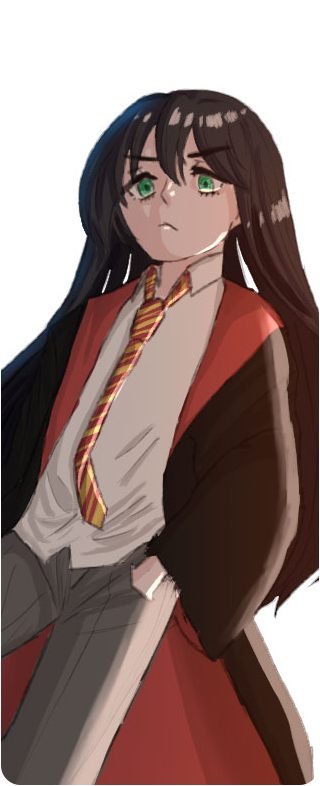
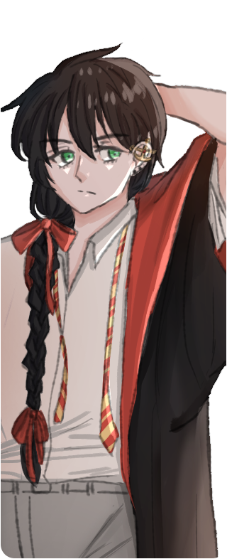
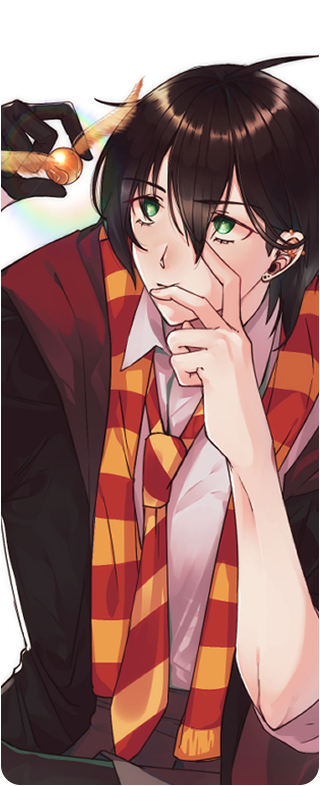
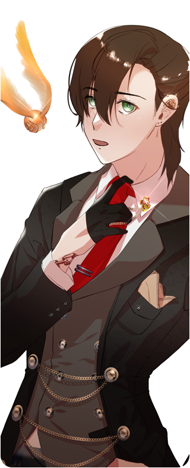
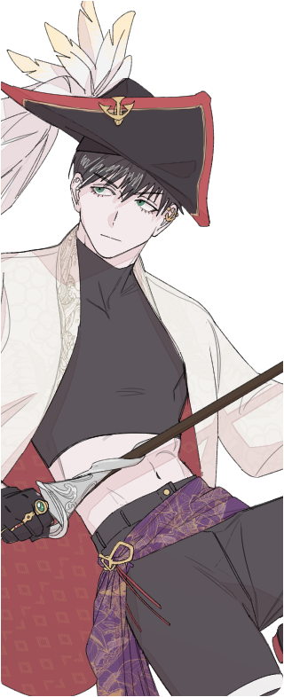

[ 백경에게 고한다. ]
나이
25세
기숙사
그리핀도르
“삶의 고난을 헤쳐나가기 위해 용기 말고 뭐가 더 필요할까.”
진영
죽음을 먹는 자
직업
장물업자
국적
영국인
혈통
머글 태생
키/무게
185cm/78kg
성별
시스젠더 남성
지팡이
적참나무/불사조의 깃/13인치/상당히 탄력 있음
성격
# 의심병 환자?
녹턴 앨리에서 널리 알려진 그의 성격은 사실 한 단어로 압축 가능했다. 의심병 말기 환자. 사람들과 피상적인 교류는 가능했지만, 더는 제 바운더리 안에 그 어떤 사람도 들이지 않기로 유명하다. 언제 어디서나 스치듯 지나가는 사람이고 타인이란 무릇 ‘언젠가는 배신한다’는 전제로 사고하며 다음 행동을 계산한다. 까닭에 여차하면 본인이 시원하게 배신하고 내버린 거래처도 제법 많다. 그때마다 “그럼 녹턴 앨리의 범죄자를 믿었나?” 하고 태평하게 굴기나 하지만.
# 시니컬
원래도 삼라만상 곱지 않은 눈길로 쳐다보던 시니컬한 성미가 어디 갔다고는 못하겠다. 오히려 두드러진 편에 가깝다. 이상이며 신념에는 관심 없다. 그는 철저히 복수만을 위해 움직이며, 누군가의 이상주의를 순진하다며 비하하는 경우도 제법 많다. 좋게 말하면 현실주의지만, 나쁘게 말하면 철저한 비관론자다. 어차피 세상은 어딜 가나 엉망진창이고 인간의 대부분은 쓰레기이니 고쳐지거나 갱생할 거라는 믿음은 가지지 않는 편이 좋다는 것이 그의 지론. 쉽게 말해, 인간은 고쳐 쓰는 게 아니라는 시니컬한 의견이다.
# 호전적인
원래 기본적으로는 자기 가게에 앉아서 사태를 관망하며 죽음을 먹는 자들에게 일조하고 있긴 했지만, 필요할 때 팔 걷어붙이고 나서지 않을 만큼 온건적이고 중립적인 인사는 물론 아니다. 가끔 전투에 임할 때마다 나오는 소리는 호전적이라는 평가다. 학창 시절에도 그다지도 불 같았던 다혈질이 갑자기 차갑게 식었을 리는 없으니. 혹은 그 불처럼 타오르던 성격뿐만 아니라, 더는 내일을 꿈꾸지 않기 때문에 오늘만 사는 사람 같은 전투 스타일을 구사하는지도 모를 일.
기타
● 가족 관계?
○ 어려서 극장 화재 사건으로 돌아가신 아버지 와이엇 윈프리드(연극 배우), 그리고 청소년기 가출 청소년이었던 본인을 보살펴 주었던 파벨 설리번. 둘 다 현 시점 고인이다. 부친의 사망 이래 쭉 어머니 달리아 윈프리드와 살았던 모자 가정 출신.
○ 어머니 달리아 윈프리드의 고질적인 도박 중독으로 인해 유아 시절부터 상당한 빈곤에 시달리던 빈민층 자제다. 지금도 여전히 도박이라면 학을 떼며, 어머니에 대한 증오가 깊다.
○ 청소년기에 도박중독자 어머니와의 갈등이 극에 달해 가출한 이후 마음씨 좋은 이웃 청년 니케포로스와 그의 직장 상사였던, 다이애건 앨리에서 골동품점 ‘피코드 호’를 운영하던 주인 파벨 설리번에게 의탁하여 지냈다. 호그와트 졸업 이후로도 해당 골동품점에서 근무했으나 죽음을 먹는 자에 가담했던 한 일탈 청소년의 테러 행위로 인해 가게가 파괴되고 파벨 설리번이 사망했다.
○ 이때, 파벨 설리번이 불사조 기사단의 연락책이라는 정보를 돈 몇 푼에 죽음을 먹는 자에게 넘긴 사람이 자신의 모친인 달리아 윈프리드. 이 돈도 결국 도박으로 날아갔다. 이 사건에서 그는 자신의 인생을 끝까지 망치러 온 자신의 어머니를 살인 저주로 단죄했다. 이 살인 사건 때문에 수배가 걸린 상태이며, 녹턴 앨리에서 불법적인 일에 종사하게 되었던 것도 자신의 불법적인 신분 때문이다.
● 주변 여론은 그를 순수혈통 기득권에 붙은 머글 태생으로 몰아가지만, 사실 그는 순수혈통 우월주의 자체에는 큰 관심이 없다. 그가 죽음을 먹는 자들과 한 배를 타는 편이 좋겠다고 판단한 이유는, 모든 머글의 척결을 위해서. 그 과정에서 이용할 수 있을 만한 거래처가 죽음을 먹는 자들이었고, 불사조 기사단은 아니었던 것뿐이다.
이미 머글이란 그에게 ‘어머니’를 연상케하는, 일종의 달리아 윈프리드가 남긴 그림자에 불과하다. 그들 집단이 거기에 있는 한, 평온히 잠들 날은 오지 않는다는 사실을 명확히 알고 있다. 어디를 가도 도처에 달리아 윈프리드를 떠올리게 하는 환경이 존재한다면 그는 언제나 격정에 사로잡히고 마는 까닭에. 이른바, 달리아 윈프리드로 대변되는 머글 사회에 대한 복수가 유일한 항해 목표로 하겠다.
머글과 마법사를 이분해서 사고한다. 혈통보다는 큰 분류를 나누어 머글과 마법사라는 두 집단이 같지 않다는 것이 그의 의견이다. 그러는 너도 머글 혈통이지 않느냐고 해도, 내가 머글인 어머니와 같을 리 없다는 대답을 내놓기나 한다.
● 녹턴 앨리에서도 유별나게 바운더리 안에 사람을 두지 않기로 유명하다. 가히 병적인 회피성 성격의 소유자라는 의견이 지배적. 대체로 달리아 윈프리드가 모든 일의 원흉이었다고 생각하지만 또 한편으로는 자신이 설리번을 사랑했기 때문에 벌어진 파국이라고 믿기 때문이다. 애초에 아무도 사랑하지 않았더라면 누가 언제 어떻게 살해당해도 자신이 흔들릴 일은 없었을 테니까.
● 25살 이전까지는 <피코드 호>에서 일하며 그저 평범하게 살았다. 외국으로 골동품을 매입하러 가기도 하고, 가게를 보기도 하고. 오른팔 재활도 공언하던 대로 병행했으나 딱히 차도가 있진 않았다. 오른팔로는 큼직한 동작과 세밀한 동작에 약간 제약이 따른다.
○ 청소년기에 그리핀도르 퀴디치 팀 소속 추격꾼이었으나 추락 사건으로 오른팔에 큰 부상을 입고 은퇴했다. 빈곤 가정 출신으로 미래에 큰 희망을 품을 줄 몰랐던 그가 유일하게 큰 꿈을 걸었던 스포츠에서 밀려나며 상당한 패배감을 겪어야만 했다.
○ 17살에 딱 한 번 그리핀도르의 반장으로 선출되었다. 선출했던 이유는 오히려 퀴디치를 그만두며 낙심한 폭이 컸다 보니 그가 학교에서 겉돌지 않도록 사감 교수가 감투 하나 씌워준 것. 그렇게 생각하면 그의 사감 교수는 머글 태생에 대한 특별한 선입견은 없었던 셈이다.
○ 근 2년 동안 빗자루를 타지 않았다. 그럴 틈이 없었고, 하늘을 날아다니다가 체포될 일 있냐는 것이 그의 의견이다. 여전히 가끔 하늘을 오래도록 바라보고, 가게 한 켠에 님부스 2001이 세워져 있지만.
● 술, 담배를 둘 다 한다. 고르자면 술을 좀 더 즐기는 편이다. 금방 취해서가 아니라 본인은 안 취하는데 남이 취해서 줄줄이 약점 드러내는 꼴을 보는 게 즐겁단다. 어디 가서 주량으로 져본 적은 없는 것 같다. 담배 자체는 그리 헤비 스모커까진 아니고, 도저히 술을 마실 환경이 아닌 경우 담배 쪽을 가볍게 즐기는 정도다.
● 25살까지 상시 연락되는 휴대전화 번호가 있었다. 지금도 여전히 휴대전화는 있는데 거래처 연락용이라는 것 같다. “야, 그거 머글 문명이야” 하면 “그럼 범죄자 놈이 매번 눈에 띄게 부엉이 날리고 있을 줄 알았나? 생존하는 데에 수단이 어디에 있지?” 하고 들은 체도 하지 않는다. 번호 자체는 자주 바뀌는 것 같다.
더는 학창 시절만큼 마냥 실없이 굴진 않게 되었지만, 대화하다 보면 태평한 농담 정도는 하고 여전히 천방지축 부엉이 드레이크와 매일매일 만담을 하기도 한다는 모양이고. 첫눈에 보기에는 사람이 차분해진 것이지 우울해졌다는 느낌은 아니다. 대화를 하면 할 수록 그다지 제정신이 아닌 것 같은 말들을 태연한 얼굴로 하는 까닭에 망가졌다는 인상을 주기도 하지만, 본인 스스로는 뭐가 달라졌는지 잘 모르는 눈치다.